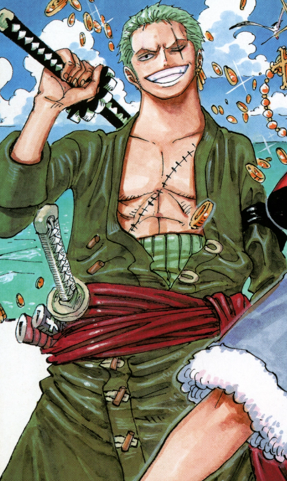
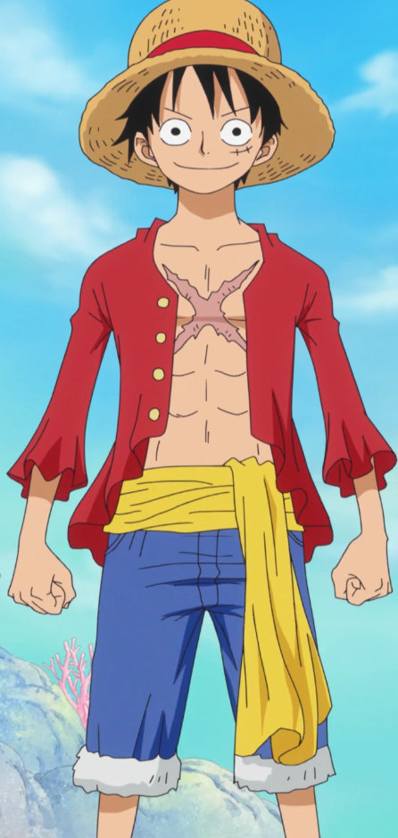

Mi is az a One Piece?
A One Piece egy népszerű japán anime és manga sorozat, amelyet Eiichiro Oda alkotott. A történet középpontjában Monkey D. Luffy áll, egy fiatal kalóz, aki azzal a céllal utazik, hogy megtalálja a legendás One Piece kincset és megváltoztassa a világot.


Miért nézd meg?
A One Piece izgalmas kalandokat, mély érzelmeket és humoros pillanatokat kínál. A történet tele van meglepetésekkel és életre szóló barátságokkal, ami miatt több millió néző szívébe belopta magát.
Főszereplők
- Monkey D. Luffy - A főszereplő, aki a Gum-Gum gyümölcs erejével rendelkezik.
- Roronoa Zoro - Luffy első társa, aki a legjobb kardforgató akar lenni.
- Nami - A navigátor, aki a kalózok térképét készíti el.
- Usopp - A csapat lövésze, aki sokszor mesél a kalandjaikról.
- Sanji - A szakács, aki álma, hogy megtalálja All Blue-t.
Erő Források
Devil Fruit
Az Devil Fruit-ok természetfeletti gyümölcsök, amelyek az egész világon szétszóródtak. Bármely élőlény, aki megeszik egyet, egyedülálló képességre tesz szert, aminek az az ára, hogy a vízben elgyengül, és elveszíti az úszás képességét. Egy jelentős kivételtől eltekintve, a lények csak egy Devil Fruit erőt szerezhetnek.
Devil Fruit tipusok
- Paramecia - olyan gyümölcsöket foglal magában, amelyek a legkülönfélébb „emberfeletti” képességek bármelyikét biztosítják. Egyetlen egyesítő jellemzőjük, hogy minden más, mint az állatokká vagy természeti elemekké való átalakulás képessége.
- Zoan - biztosítják a képességet, hogy egy adott állattá, valamint a képességet használó saját fajának (leggyakrabban ember) és a fent említett állatnak a hibrid formájává alakuljon át. A többi ördögi gyümölccsel ellentétben a Zoan-gyümölcsökről azt mondják, hogy saját akarattal rendelkeznek.Egy nemrégiben felfedezett tudomány lehetővé teszi, hogy a Zoan-gyümölcsöket élettelen tárgyakba építsék be, életre keltve a tárgyat, és megadva neki a szokásos Zoan-átalakulásokat.
Zoan tipusú Devil Fruit-ok
- Ancient Zoan - lehetővé teszik a felhasználó számára, hogy egy kihalt fajjá, például dinoszauruszokká alakuljon át. Az ősi zoanok ritkák, és erősebbnek tűnnek, mint a hagyományos zoanok.Néhányan még olyan atipikus fizikai képességeket is mutattak, amelyekről a használóik azt állítják, hogy az igazi állatok természetes módon rendelkeztek velük.
- Mythical Zoan - lehetővé teszik a felhasználó számára, hogy mitológiai lényekké, például sárkánnyá vagy főnixszé alakuljon át. A mitikus Zoan állatok általában további különleges képességekkel rendelkeznek, például a főnix Zoan képes gyógyító erejű lángokat generálni.A mitikus zoanok a legritkább ördögi gyümölcsök, még a logiáknál is ritkábbak.
- Logia - a három alapvető Devil Fruit-ok közül a legritkább és legerősebb, olyan gyümölcsökre utal, amelyek hatalmat biztosítanak a testünk megteremtésére, irányítására és átalakítására egy-egy természeti elemmé, pl.: tűz, villám, jég, homok, sár, magma, füst, gáz, növény, fény és sötétség.
Haki
A Haki egy titokzatos erő, amely lehetővé teszi az egyének számára, hogy saját spirituális energiájukat különböző emberfeletti teljesítményekre használják fel. Mivel ez az energia az akaraterőből nyilvánul meg, elméletileg a világ összes élőlénye számára nyitva áll; a túlnyomó többség azonban vagy nem tudja, hogyan lehet felszabadítani, vagy képtelen elsajátítani.
A Haki tipusai
- Observation Haki - amely hatodik érzéket ad a használónak a körülötte lévő világról, lehetővé téve számára, hogy megérezze más emberek jelenlétét, erejét és érzelmeit, még akkor is, ha azok nincsenek szem előtt vagy messze vannak. Korlátozott prekognitív képességeket is biztosít, lehetővé téve a felhasználó számára, hogy megérezze ellenfelei szándékait, és előre megjósolja tetteiket és támadásaikat, mielőtt azok megtörténnének.
- Armanent Haki - amely lehetővé teszi a felhasználó számára, hogy saját auráját páncélként használja a támadások elleni védekezésre, valamint hogy saját támadásait erősebbé tegye. Arra is használható, hogy megkerülje az Devil Fruit védelmét, például a Logia megfoghatatlanságát. A személy a fegyverzetet a teste egy részére, az egész testére, sőt, akár a fegyverére is felhordhatja. A Fegyverzet Haki bevonat hatására a bevont terület fényes feketévé válik, egy különösen vastag és erős bevonat pedig lángszerű mintázatot kap a széle mentén.
- Conqueror Haki - amely biztosítja a felhasználónak azt a képességet, hogy felszabadítsa saját akaraterejét, hogy legyőzze mások akaratát. Ez azt eredményezi, hogy az áldozatokat mentálisan elnyomja a felhasználó, és a különösen gyenge akaratú ellenfelek azonnal elveszítik az eszméletüket. Emellett képes nyomást gyakorolni a tárgyakra és kárt okozni bennük, két különösen erős Conqueror használó összecsapása képes „kettészakítani az eget”. A többi Haki-típussal ellentétben, amelyeket bárki megtanulhat, a Legfelsőbb Király Haki egy ritka képesség, amelyet csak minden millió emberből egy születik meg azzal a képességgel, hogy használni tudja.